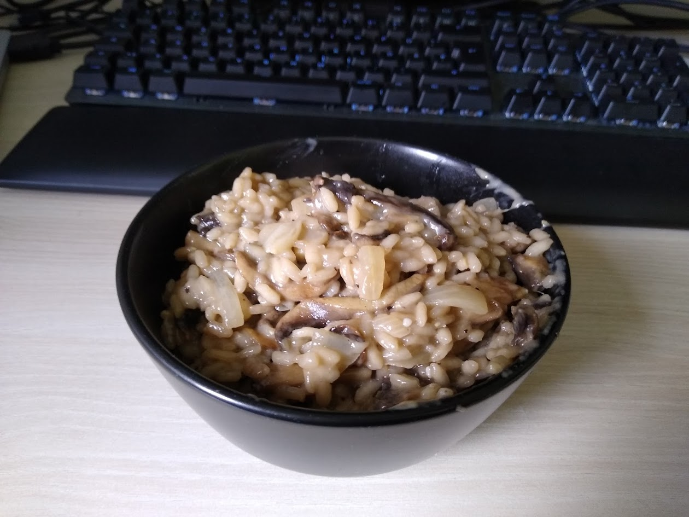

Risotto

Description:
Vegetable stock risotto with mushroom and Parmesan chesse.
Ingredients:
- Mushrooms: 350 g
- Onion: 1 piece(s)
- Garlic: 3 cloves
- Risotto Rice: 1 cup
- Parmesan: 120 g
- Salt & Pepper
Instructions:
- Chop the ingredients.
- Add 1/4 of mushrooms and onions and 1 garlic clove to a pot, add water and boil to get stock.
- In a pan: Fry onion, wait, add garlic, add mushrooms.
- Add the rice to the pan and slowly add the stock.
- Season with salt and pepper. Consider that Parmesan will be added in the next step.
- When the consistency of the rice is good enough, add the parmesan, mix. Remove from heat and let it rest.
Return to Home Page